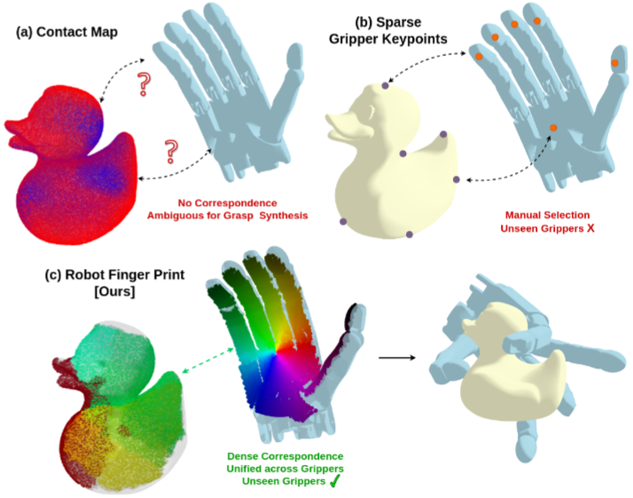

Research & Teaching
My main research focus is on robot manipulation methods, especially robust grasping. I am interested in developing generalizable grasp and manipulation methods which can scale well to unseen objects and gripper morphologies. I am currently trying to develop generative models for fast and accurate grasp synthesis. In addition to this, I am also interested in interactive perception based methods relating to real world unseen object segmentation.
Service
I have served as a paper reviewer for the following:
- 2025: RA-L, IROS
- 2024: RA-L, IROS, CoRL, ACM MM
- 2023: ICRA, IROS, CoRL, ACM MM
- 2022: ICRA, IROS, ICMR, ICHI, ACM MM
- 2021: IEEE VR, ACM MM
Workshop Organization: Neural Representation Learning for Robot Manipulation, 2023 Conference on Robot Learning
Teaching Assistance
- CS 4341: Digital Logic and Computer Design
- CS 4361: Computer Graphics
- CS 4395: Natural Language Processing
- CS/STAT 6313: Statistical Methods for Data Science
- CS 6301: Machine Learning (Special Topics in CS)
- CS 6301: Robotics (Special Topics in CS)
Mentoring
- Working with two undergrad students on a research project around on the topic of Interactive Perception for object segmentation.
- Mentored six freshmen at IIT-Kanpur as part of my duties as a student guide in the Counselling Service of the institute.
- Volunteering as a “Peer Mentor” for incoming PhD students in the Engineering and Computer Sciences (ECS) school.
Relevant Publications
 RobotFingerPrint: Unified
Gripper Coordinate Space for Multi-Gripper Grasp Synthesis
With F Casas, B Prabhakaran, Y Xiang
Under Submission
| Arxiv | Project
Page
 MultiGripperGrasp: A Dataset
for Robotic Grasping from Parallel Jaw Grippers to Dexterous
Hands
MultiGripperGrasp: A Dataset
for Robotic Grasping from Parallel Jaw Grippers to Dexterous
Hands
With F Casas, B Prabhakaran, Y Xiang
In IEEE International Conference on Intelligent Robots and Systems
(IROS) 2024
| Arxiv | Project
Page
 RISeg: Robot Interactive
Object Segmentation via Body Frame-Invariant Features
RISeg: Robot Interactive
Object Segmentation via Body Frame-Invariant Features
With H Qian, Y Lu, K Ren, G Wang, Y Xiang, K Hang
In IEEE International Conference on Robotics and Automation (ICRA)
2024
| Arxiv |
 SceneReplica: Benchmarking
Real-World Robot Manipulation by Creating Reproducible
Scenes
SceneReplica: Benchmarking
Real-World Robot Manipulation by Creating Reproducible
Scenes
With S Allu, Y Lu, J Jaykumar, B Prabhakaran, Y Xiang
In IEEE International Conference on Robotics and Automation (ICRA)
2024
| Arxiv | Project Page
|
 CIS2VR: CNN-based Indoor
Scan to VR Environment Authoring Framework
CIS2VR: CNN-based Indoor
Scan to VR Environment Authoring Framework
With H Kumar, B Prabhakaran
In IEEE International Conference on AI & extended and VR (AIxVR)
2024
| DOI
Link |
 Self-Supervised Unseen
Object Instance Segmentation via Long-Term Robot
Interaction
Self-Supervised Unseen
Object Instance Segmentation via Long-Term Robot
Interaction
With Z Xu, C Averill, K Palanisamy, K Hang, Y Guo, N Ruozzi, Y
Xiang
In Robotics: Science and Systems (RSS) 2023
| Arxiv | Project
Page |
 Skeletal Point
Representations with Geometric Deep Learning
Skeletal Point
Representations with Geometric Deep Learning
With B Paniagua, J Vicory
In IEEE International Symposium on Biomedical Imaging (ISBI) 2023
(Oral)
| Arxiv | Code |
 NeuralGrasps: Learning
Implicit Representations for Grasps of Multiple Robotic
Hands
NeuralGrasps: Learning
Implicit Representations for Grasps of Multiple Robotic
Hands
With N Song, Z Xu, B Prabhakaran, Y Xiang
In Conference on Robot Learning (CoRL) 2022
| Arxiv | Project Page
|
 Virtepex: Virtual Remote
Tele-Physical Examination System
Virtepex: Virtual Remote
Tele-Physical Examination System
With K Desai, B Prabhakaran, T Annaswamy
In ACM Designing Interactive Systems Conference (DIS) 2022
| DOI Link
|
 Generalized submodular
information measures: Theoretical properties, examples, optimization
algorithms, and applications
Generalized submodular
information measures: Theoretical properties, examples, optimization
algorithms, and applications
With R Iyer, J Bilmes, H Asanani
In IEEE Transactions on Information Theory (ISIT) 2021 | DOI Link
Submodular combinatorial
information measures with applications in machine learning
With R Iyer, J Bilmes, H Asanani
In Algorithmic Learning Theory (ALT) 2021
| JMLR
Link | Arxiv |